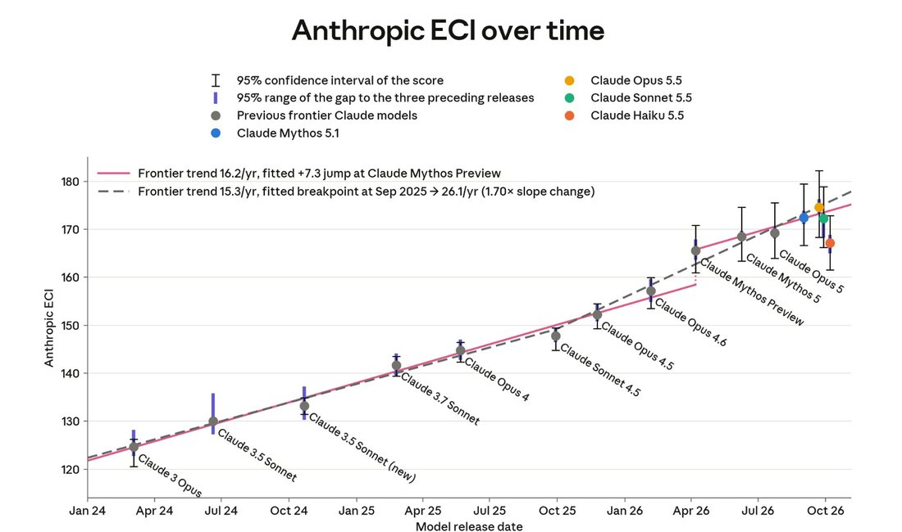

On the Anthropic ECI, Haiku 5.5 scores marginally higher than Mythos preview, which was made available to Project Glasswing partners six months ago today. https://t.co/G2OMFW0CNk


cited on: claude-haiku-5-5
Reproduced against link rot, credited and linked to its original. Yours and you’d rather it weren’t here? Open an issue.